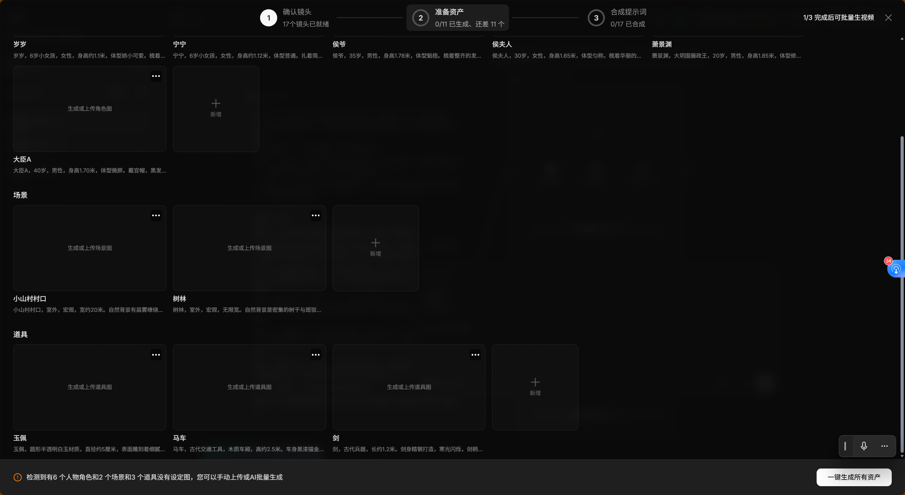
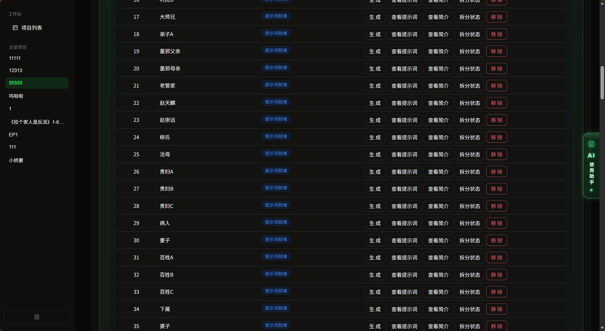

本视频为 AI 漫剧 Skills 系统的 测试2.0 完整演示，涵盖从剧本输入到成片输出的全链路自动化流程。点击下方目录可快速跳转到对应内容段。
视频内容导览
点击时间戳跳转播放
00:00
开场与项目概览
进入 第零世界 平台，展示项目 "11111" 基本信息：9:16 竖屏、电影写实风格、剧本优先模式，共 166 镜、第 1-5 集。
02:00
风格参数配置与资产拆解
配置画风（T3 真人实拍/影视级）、时代（古代）、场景风格（S06b 古风言情）、审美取向（G1 女频阴柔风），执行资产拆解。
04:00
角色资产生成与查看
展示角色"侯爷"的标准造型人物母图：正/侧/背/全身多视角视图，状态显示"已锁定"，可查看原图与提示词。
06:00
角色 QA 与批量锁定
展示 58 个角色的完整列表，5 个已锁定（侯爷、侯夫人 qa_passed），其余角色显示 QA 状态，支持批量锁定操作。
08:00
图片生成进度与导入管理
流程推进至"导入图片"阶段，展示覆盖/重导功能，多个角色状态为"生成中"，支持批量导入 ZIP 与单张覆盖。
11:00
证件照管理与解锁流程
展示角色证件照列表，主角母图未解锁（等待 4 人证件照锁定：岁岁、萧景渊、沈寒霜、墨邪），部分配角已生图可用。
竞品对比：libtv vs 第零世界
同一部 62 集古风言情剧本，两种工具的处理结果
| 维度 | libtv | 第零世界 / Skills |
|---|---|---|
| 长剧本处理 | 62 集全集喂入后严重丢内容：角色从 8 个降至 3-6 个，场景从 5 个降至 2 个 | 62 集全集完整解析，58 个角色全识别，多场景，166 镜（前 5 集展示段） |
| 分镜数量（同 1-5 集） | 29 镜 | 166 镜，颗粒度细 5.7 倍 |
| 分镜数量（完整剧本） | 8-17 镜（给越多丢越多） | 166 镜（前 5 集），细 9.8-20.7 倍 |
| 角色识别 | 3-8 个（不稳定，长文本下丢失） | 58 个自动识别，稳定 |
| 资产生成 | 0/N 全部未生成，卡 99% 或为空 | 批量生成 + QA 锁定，进度可追踪 |
| 风格控制 | 全局单一段落，无法按片段/场景配置 | 分场景独立参数（T3 + 古代 + S06b + G1） |
| 提示词结构 | 自然语言长段落，手动合成 | 结构化自动组装（画面纪律 + SFX 同步锚 + 焦段词配对） |

libtv：62 集全集只识别出 6 个角色，资产全空

第零世界：58 个角色自动识别，提示词就绪，批量生成
本质区别：libtv 是"短篇片段工具"——剧本短了能跑但资产为空，剧本长了直接丢角色丢场景丢分镜； 第零世界 是"长篇剧集管线"——62 集全集完整吃进去，58 角色全识别，166 镜不丢，流程全链路跑通。